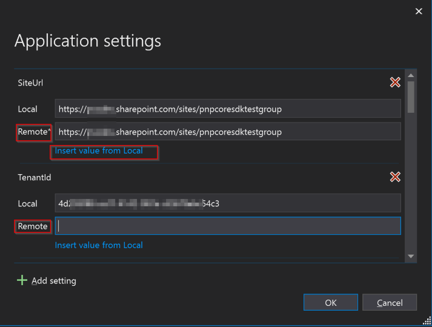
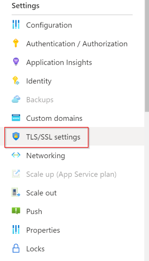
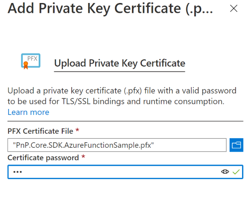
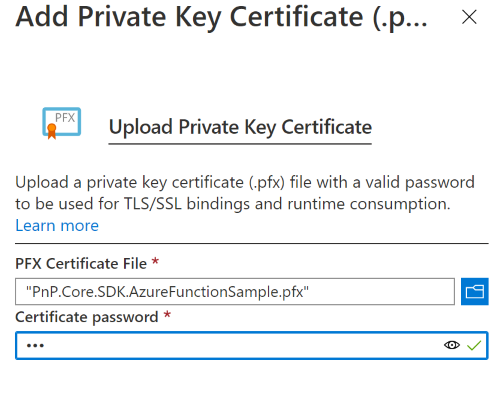

PnP Core SDK - Azure Function v3 Sample
This solution demonstrates how to build a simple backend API in the form of an HTTP Trigger Azure Function. A GetSiteDocuments() function that returns the list of documents in the Shared Documents library of the configured site via using an App-Only context authenticated with a self signed certificate.
Source code
You can find the sample source code here: /samples/Demo.AzureFunction
Note
This sample was created with Visual Studio 2019 (v16.7.3) and has been tested with a Windows Azure Function v3.
Quickstart
Setup
Note
For the quickstart setup, you will need to have a recent version (> 1.2.0) of PnP.PowerShell installed on your machine.
From the solution folder execute the following PowerShell. (Make sure you set the values of the variables according to your environment and preferences)
$site = "https://contoso.sharepoint.com/sites/pnpcoresdktestgroup"
$tenant = "contoso.onmicrosoft.com"
$pwd = "pwd"
.\Configure.ps1 -SiteUrl $site -Tenant $tenant -CertificatePassword $pwd
This script will:
- uses DeviceLogin method to connect to Azure AD
- register a new Azure AD application
- grant it the permissions to allow the use of all PnP Core SDK features
- Create a self signed certificate, save it to your local store and export it as .cer and .pfx files
- Pre-fill your local.settings.json file with the needed information from operations above
Feel free to have a look at the Configure.ps1 to check what it does.
The settings of the Azure Function will contain the following
{
"IsEncrypted": false,
"Values": {
"AzureWebJobsStorage": "UseDevelopmentStorage=true",
"FUNCTIONS_WORKER_RUNTIME": "dotnet",
"SiteUrl": "https://contoso.sharepoint.com/sites/pnpcoresdktestgroup",
"TenantId": "[TENANT ID]",
"ClientId": "[CLIENT ID]",
"CertificateThumbPrint": "[CERTIFICATE THUMBPRINT]",
"WEBSITE_LOAD_CERTIFICATES": "[CERTIFICATE THUMBPRINT]"
}
}
The settings above are mostly necessary for authentication.
| Setting | Description |
|---|---|
| SiteUrl | This parameter allows you to configure the URL of the Site to use for your Default configuration. |
| TenantId | The ID (GUID) of your tenant. Used by the PnP Core authentication provider. |
| ClientId | The Client ID of your Azure AD app. Used by the PnP Core authentication provider. |
| CertificateThumbPrint | The Thumbprint of the certificate. Used by the PnP Core authentication provider. |
| WEBSITE_LOAD_CERTIFICATES | The Thumbprint of the certificate. Indicates the Azure Function runtime to load the certificate from its registered certificates. |
Note
For more information about configuring authentication, please visit PnPCoreSDK Documentation: Using the SDK - Authentication
Try it locally
Open the solution in Visual Studio and hit F5 to launch the Azure Function emulator
When you see the following your local Azure Function is up and running
Azure Functions Core Tools (3.0.2912 Commit hash: bfcbbe48ed6fdacdf9b309261ecc8093df3b83f2)
Function Runtime Version: 3.0.14287.0
Hosting environment: Production
Content root path: C:\wrk\pnp\pnpcore\src\samples\Demo.AzureFunction\bin\Debug\netcoreapp3.1
Now listening on: http://0.0.0.0:7071
Application started. Press Ctrl+C to shut down.
Functions:
GetSiteDocuments: [GET] http://localhost:7071/api/GetSiteDocuments
To test the API, you can open the above URL in a browser or by typing the following command in a console:
curl http://localhost:7071/api/GetSiteDocuments
Try it on Azure
If you followed all the steps above and the Function is working well locally, you can publish your Azure Function on Azure. For the sake of simplicity, in this sample, we will use the Publish feature from Visual Studio.
The extra steps consist in:
- Make sure the app settings are specified in the Azure Function App
- Make sure the Certificate we use for authentication is uploaded to the Azure Function App
To publish the Azure Function:
- In the Visual Studio Solution Explorer, right-click the Demo.AzureFunction project and click Publish
- Create or Import a publishing profile to an Azure Function App
- Click Publish
- Click the Manage Azure App Service settings link

- For each setting for which a Remote value is not yet specified, click the Insert value from Local link

- Click the Manage in Azure Portal link
- In the TLS/SSL settings tab, choose Private Key Certificates (.pfx) and click Upload Certificate

 

- Browse your computer and select the .pfx certificate we created earlier, enter the password chosen earlier and click Upload
To Make sure the Azure Function is working properly, on the Azure Portal go to your Function App blade:
- Go to the Functions tab
- Select the GetSiteDocuments function
- On the Code + Test tab, click the Test/Run button
- Make sure the chosen Method is GET
- Click Run


Alternatively, from Code + Test tab mentioned aboved you can click the Get Function URL button and copy the URL. Then paste it in your browser or using curl in a terminal (see example here below)
# On Windows 10
curl https://pnpcoresdk-demo.azurewebsites.net/api/GetSiteDocuments?code=gqyZ4H259HbYfk7axxxxxxxxxxxxxxxaqmtleLUHISazg/FDvSbLtYaw==
StatusCode : 200
StatusDescription : OK
Content : {"documents":[{"name":"test.docx","timeLastModified":"2020-08-31T21:29:56Z","uniqueId":"fbc3c372-c1
36-45ee-8341-1e768c973182"}]}
RawContent : HTTP/1.1 200 OK
Content-Length: 128
Content-Type: application/json; charset=utf-8
Date: Sun, 27 Sep 2020 15:52:36 GMT
{"documents":[{"name":"test.docx","timeLastModified":"2020-08-31T21:29:56Z",...
Forms : {}
Headers : {[Content-Length, 128], [Content-Type, application/json; charset=utf-8], [Date, Sun, 27 Sep 2020
15:52:36 GMT]}
Images : {}
InputFields : {}
Links : {}
ParsedHtml : mshtml.HTMLDocumentClass
RawContentLength : 128